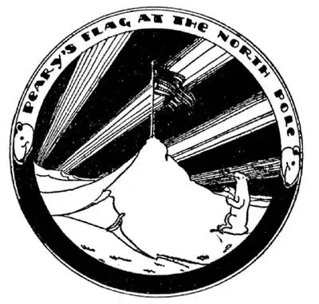
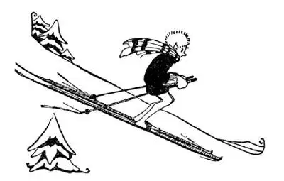

41
Fish, Fiords, Falls, and Forests (continued
)
鱼儿、峡湾、瀑布和森林（续）

THE “fishiest” city in the World is in Norway on a fiord. The city and the fiord are both called Bergen. The fishermen from the Lofoden Is-lands and the fiords bring their catches to Bergen—boatloads of big fish and little fish, thick fish and thin fish, white fish and black fish—to sell and to ship everywhere.
Bergen is also another “est” besides the “fishiest.” It is the wettest city in Europe. People carry umbrellas or raincoats all the time, for you scarcely ever see the sun, and when it is not raining it is getting ready to. It takes a lot of rain, if caught in a bucket, to make as much as an inch deep of water. Perhaps you have seen it rain so hard that the streets were flooded and at the crossings the rain has been over your shoe tops, but probably it has rained less than an inch in any one spot, such as in a bucket. Of course, when rain runs off the roof and pours down on to the street the water has run together from a large space, but very few cities have a rainfall of more than a few feet in a whole year. Bergen however has a rainfall of six feet in a year. This is enough rain to drown every man, woman, and child in the city if it all came down at once, but fortunately it does not.
As nearly every family in America has an automobile, nearly every family in Norway has a boat. The Norwegians always have been famous sailors.
Long, long ago the Norwegian sailors were called Vikings, which, however, does not mean Vi-“kings,” but “Vik”-ings, and that means “fiordmen.” One of the greatest of these Vikings was a man named Leif, son of Eric, called Leif Ericson. Leif Ericson lived about a thousand years ago. He and his men sailed across the ocean and landed in America five hundred years before Columbus discovered America, but he didn’t think much of the country, and when he went back to Norway he said little about it.
In later times there have been famous sailors and discoverers too in Norway. Men up there live so near the top of the earth that they have tried to go all the way to the top, to the point where if you stood still you would turn exactly around on the spot where you stood once every twenty-four hours. That point is the North Pole. Such men have risked their lives—and many have lost them—in trying to reach the poles. Two famous Scandinavian explorers, Nansen and Amundsen, tried—they didn’t lose their lives, but they didn’t reach the North Pole, either. An American named Peary was the first man to reach the North Pole. Amundsen, however, tried to reach the South Pole and he succeeded. He was the first man to reach the South Pole. Since then airplanes, and a Norse airship too, have crossed the North Pole, but they didn’t stop there. Later Amundsen started for the North Pole in an airplane and was never heard from again.

Peary was the first man to reach the North Pole
皮里是第一位到达北极的人
You have overshoes to wear when you go out in the snow, but every one in Norway and Sweden has a pair of long wooden runners called “skis,” which he straps to his shoes when he goes out. With these on his feet he coasts over the top of the snow, making a sled of himself—sliding down slopes and pushing himself along on level ground with a pole, as if it were a cane.

He makes a sled of himself
他自制滑雪板
Have you ever seen a white blackbird? No one has. Have you ever seen white coal? They have a lot of it in Norway and Sweden. On the tops of the mountains there are vast fields of snow and ice like frosting on a huge cake, but as this snow and ice sinks down to the valleys it melts and the water falls in streams like rain running off a roof down a waterspout. This water falling is used in Norway and Sweden to turn wheels and the wheels turning are used to run sawmills and machinery, just the same as if the wheels were turned by steam-engines run with coal fires. Norway and Sweden have no black coal, but the waterfalls do much the same thing; they run machines, and so people speak of their waterfalls as “white coal.”
But white coal won’t do one thing that black coal will do—it won’t heat. In the northern part of Sweden there are iron mines. This iron is particularly good for making tools that have to have sharp edges, like knives and razors. But there is no black coal to melt the iron out of the ore, so they ship most of the ore to England, where there is plenty of coal, and there the English make fine cutlery from it.
Perhaps you have seen pictures of pine-trees in the snow or covered with snow. Anyway, pine-trees and snow seem to go together, and a great part of Norway and Sweden is covered with forests chiefly of pine-trees. Pine-trees—tall, straight ones—make fine masts for ships, flag and telegraph poles, and lumber for building. They also make fine match-sticks, and millions of match-sticks can be made out of a single tree. If you will look on a box of matches that you may find at your home, you will probably see the words “Made in Sweden” printed on it. The smaller trees the Swedes grind up into pulp, which is used to make paper, for almost all paper nowadays—whether it is newspaper, wrapping-paper, or the paper you write on—is made of wood-pulp rolled thin. So the people in Sweden cut down trees, saw them up into logs, slide them into the streams, and float them down to the sea, and there they ship them all over the World. But they take good care to plant little trees for every large tree cut down, so that there will always be more trees.
【中文阅读】
世界上“最有鱼味”的城市就在挪威的一个峡湾里，这个城市和这个峡湾都叫卑尔根。来自罗佛敦群岛和峡湾的渔民将他们捕捞的鱼——整船的鱼，有大鱼和小鱼、有肥厚的鱼和瘦薄的鱼、有白鱼和黑鱼——运到卑尔根来卖，再用船运到世界各地。
卑尔根除了最有鱼味之外，还有一个“之最”。卑尔根是欧洲最潮湿的城市。当地人总是随身携带雨伞或雨衣，因为你几乎看不到太阳。即使现在没下雨，但说不定什么时候说下就下。一般雨天如果用桶接雨水的话，则需要相当大的雨量，桶里才会有大约1英寸的雨水。也许你注意到，下暴雨时这里的街道都会被淹；在十字路口，积水会漫过你的鞋面。但是，很可能平均在任何一个地点，雨水都不会超过1英寸深，就像用桶接水一样。当然，当雨水从屋顶 倾泻到街道上时，雨水是从一个很大的空间汇流到一起的。但是，世界上很少有哪个城市的年降水量达到几英尺以上，而卑尔根的年降水量达到6英尺。幸而这么多的雨水不是一次降下的，否则城里所有的男人、女人、小孩都会被淹死。
差不多美国每个家庭都有汽车，同样，差不多挪威的每个家庭都有船。从古到今，挪威人因善于航海而闻名于世。
很久以前，挪威水手被称为“维金族人”，“维金”是“峡湾人”的意思。其中最伟大的一个峡湾人是一个名叫莱弗的人，他是埃里克 [1] 的儿子，全名是莱弗 · 埃里克松。莱弗 · 埃里克松生活在一千年前，他和他手下的人早在哥伦布发现美洲前五百年就航海穿过大洋来到美洲大陆，但是，他并不看重这个地方。回到挪威之后，他很少向人提起这个地方。
后来，挪威还出现了很多著名的航海探险家。生活在挪威的人因为非常靠近地球的顶部，所以他们总想要北上到达地球的顶端，也就是到达一个点，在这个点上，如果你站着一动不动，每隔24小时，你会在原地自转了一圈，这一点就是北极。曾有人冒着生命危险——确实很多人为此失去了生命——试图到达北极和南极。有两位著名的斯堪的纳维亚探险者，南森和阿蒙森，尝试了——他们没有失去生命，但也没能到达北极。一位叫皮里的美国人是第一位到达北极的人，不过阿蒙森却成功到达南极。阿蒙森是第一位到达南极的人。从那时起，还有一些飞机和挪威的一艘飞船飞越过北极，但都没有在那儿停留。后来，阿蒙森开飞机向北极出发，之后就再也没有他的任何消息了。
雪天外出时，你会穿上套鞋，但在挪威和瑞典每个人都会有一双长长的、木制的滑行器，叫“滑雪板”。他们外出时就会用带子将滑雪板绑在鞋子上。有了滑雪板，他们就能在雪上滑行，就好像把自己变成了一个雪橇——滑下斜坡，在平坦的地面上就用手杖样的杆子撑着自己不断向前滑行。
你见过白色的黑鸟吗？没有人见过。你见过白色的煤吗？在挪威和瑞典就很多。山顶有大片大片雪和冰，就像一块巨大的蛋糕上撒满了糖霜。但是，当这些雪和冰下沉到山谷里的时候，就融化了，水川流不息地向下落形成瀑布，就像雨水从屋顶流进排水管一样。挪威和瑞典就利用这些瀑布驱动轮子，转动的轮子又带动大型锯木机和机器，就像烧煤来发动蒸汽机，再用蒸汽机来转动轮子一样。挪威和瑞典没有黑色的煤，但是，瀑布发挥了同样的作用，于是， 人们就把瀑布说成“白色的煤”。
但是，有一件事，白色的煤做不到，而黑色的煤却能做到，那就是产生热量。瑞典的北部有铁矿，这儿产的铁品质好，特别适合用来制作有锋利刀刃的工具，如各种刀具和剃刀。但是，没有黑色的煤就不能将铁从铁矿里提炼出来，于是瑞典人就用船将大部分铁矿石运到煤炭资源丰富的英国。在英国人们用提炼出来的铁制造出精美的刀具。
也许，你见过雪地里松树的图片，或是被雪覆盖着的松树的图片。不管怎样，松树和雪似乎总在一起。挪威和瑞典的大部分国土都被森林覆盖着，主要是松树林。松树，长得又高又直，可制成优质的桅杆、旗杆、电线杆和建筑木材；松树还可制成优质的火柴梗，一棵树就可生产出数百万根火柴梗。看看家里的火柴盒，你也许发现上面印着“瑞典制造”。瑞典人把小一点的树木磨碎成浆，用来造纸——现在几乎所有的纸——不论是报纸、包装纸，还是你用来书写的纸——都是树浆制成的。所以，瑞典人将树砍下，锯成圆木，让其滑进小溪，再顺流而下，漂到海里，再用船运到世界各地。但是瑞典人砍伐每一棵大树的同时，还会种上小树苗，细心照料，这样就会有源源不断的木材了。